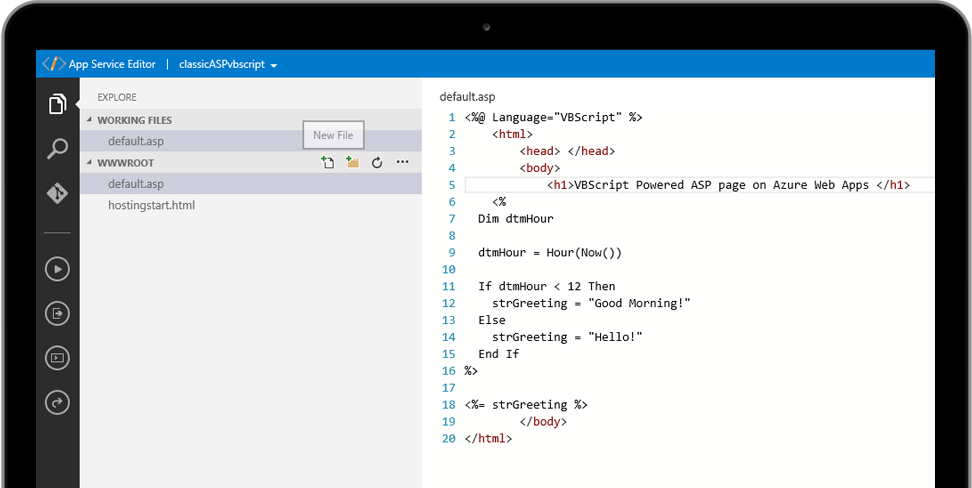

134-3622-2876
134-3622-2876
134-3622-2876
134-3622-2876

这是ASP技术服务，提供有关 ASP 开发、定制和维护的技术支持。凭借超过 20年的经验，我们是解决ASP网站或者代码问题的专家。
ASP（现在有时也称为"经典 ASP"，用以将其与 微软的ASP.NET 技术区分开来），他是至今仍在使用的一种微软脚本语言技术。
尽管年代久远，但在使用经典 ASP开发网站或应用的时候，您依然可以使用微软提供的所有目前流行的开发工具和组件，包括 IIS（Internet Information Server，Internet信息服务器）。
就目前而言，全球依然有数亿计的网站或无数的应用运行在ASP 平台上。您投入资金用经典ASP 开发好的Web 应用，如果您希望从头开始完全重写，则将花费更多的金钱、时间和资源。由于微软早前都宣布，Windows IIS 将永远支持经典ASP - 与应用重新开发相比，维护应用更能节省您的成本，并获得长期稳定的效益，而且耗时更少，何乐而不为。

中小企业、事业单位，制造业、政府、学校、房地产、酒店、宾馆、零售百货、连锁店、超市、广告公司、化妆品、通讯、娱乐、服务业、金融保险、各行各业服务机构等等。
1、用户需求调研、整理出系统体系结构、功能、性能的分析和总体设计工作；
2、项目的开发流程管理，进行项目的计划、管理、跟进工作；
3、指导开发工程师完成系统详细设计和开发工作，解决相应业务、技术难题；
4、编制用户手册、协助客户的系统软件、硬件平台的安装实施工作；
5、制定项目文档格式，编写项目管理规范要求的相关文档